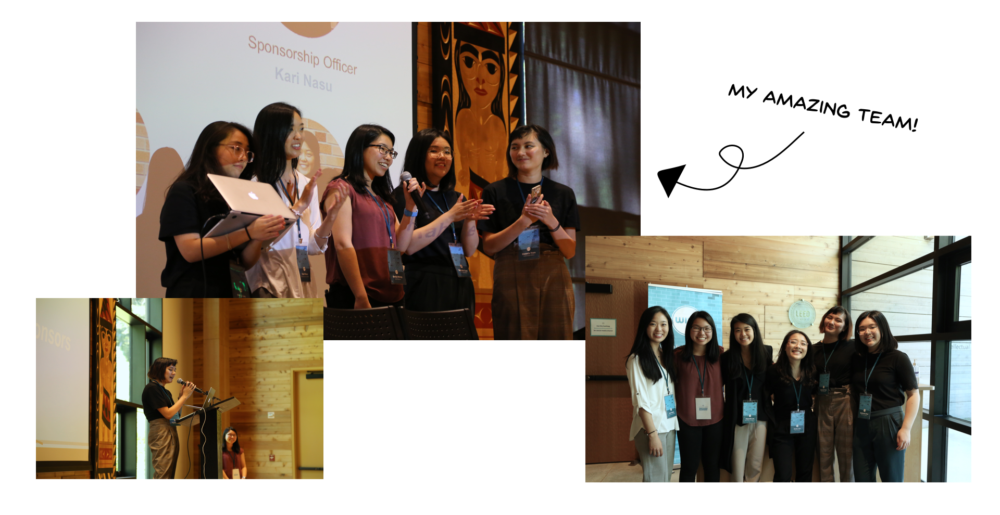
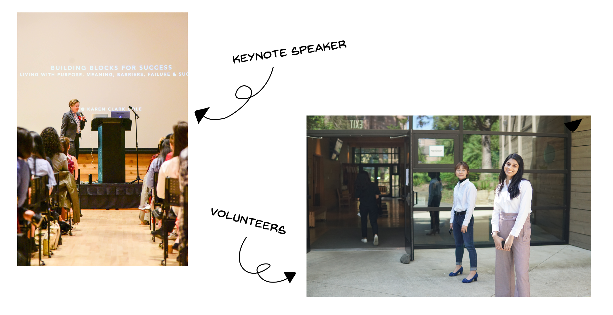
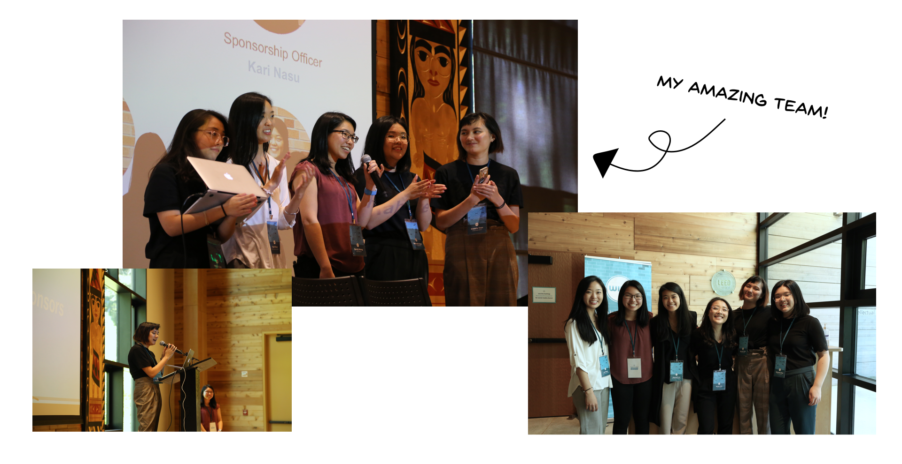
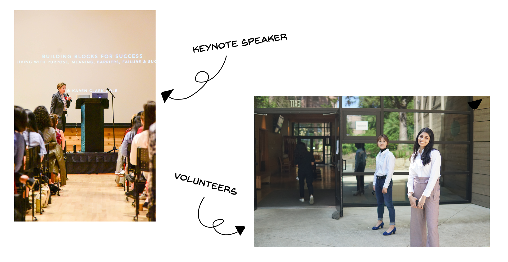

Women in User Experience
Skills
Background
WIUX empowers women in the field of user experience by providing career-building events. As Media Officer for 2017-18, I led the rebranding effort and created posters and social graphics for all events, including our annual conference.
 
